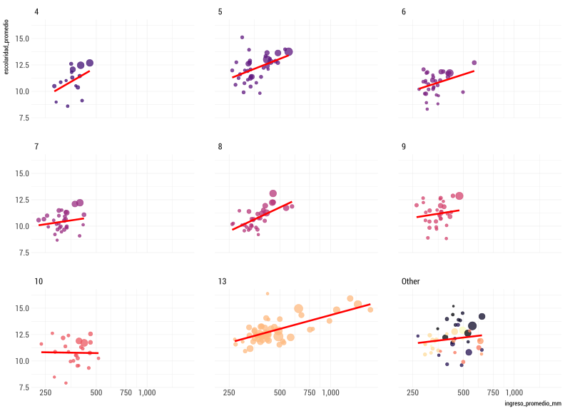

Introducción al Uso de R para Análisis Estadístico

Importar
Con R podemos acceder a información desde distintas fuentes:
- Archivos de texto plano: txt, csv, tsv
- Archivos MS excel, SPSS, SAS
- Base de Datos: MySQL, SQLServer, PostgreSQL
- APIs
library(tidyverse)
comunas <- read_csv("data/codigos_comunales.csv")
comunas## # A tibble: 347 x 2
## CODIGO COMUNA
## <int> <chr>
## 1 15101 Arica
## 2 15102 Camarones
## 3 15201 Putre
## 4 15202 General Lagos
## 5 1101 Iquique
## 6 1402 Camiña
## 7 1403 Colchane
## 8 1404 Huara
## 9 1405 Pica
## 10 1401 Pozo Almonte
## # ... with 337 more rowslibrary(haven)
casen <- read_sav("data/casen/Casen 2015.sav")
casen## # A tibble: 266,968 x 776
## folio o id_vivienda region provincia comuna zona hogar tot_hog
## <dbl> <dbl> <dbl> <dbl+l> <dbl+lbl> <dbl+> <dbl> <dbl> <dbl>
## 1 1.10e10 1 1101100101 1 11 1101 1 1 1
## 2 1.10e10 2 1101100101 1 11 1101 1 1 1
## 3 1.10e10 3 1101100101 1 11 1101 1 1 1
## 4 1.10e10 4 1101100101 1 11 1101 1 1 1
## 5 1.10e10 5 1101100101 1 11 1101 1 1 1
## 6 1.10e10 1 1101100102 1 11 1101 1 1 2
## 7 1.10e10 1 1101100103 1 11 1101 1 1 1
## 8 1.10e10 1 1101100104 1 11 1101 1 1 1
## 9 1.10e10 2 1101100104 1 11 1101 1 1 1
## 10 1.10e10 1 1101100105 1 11 1101 1 1 1
## # ... with 266,958 more rows, and 767 more variables: tot_par <dbl>,
## # tot_nuc <dbl>, tot_per <dbl>, pres <dbl+lbl>, marca <chr>,
## # pco1 <dbl+lbl>, sexo <dbl+lbl>, edad <dbl>, ecivil <dbl+lbl>,
## # h5l <dbl>, h5h <dbl>, pareja <dbl+lbl>, nucleo <dbl+lbl>,
## # pco2 <dbl+lbl>, e1 <dbl+lbl>, e2a <dbl+lbl>, e2b <dbl+lbl>,
## # e2c <dbl+lbl>, e3 <dbl+lbl>, e4 <dbl+lbl>, e4_esp <chr>,
## # e5a <dbl+lbl>, e5a_esp <chr>, e5b <dbl+lbl>, e6a <dbl+lbl>,
## # e6b <dbl+lbl>, e6c_cod <dbl+lbl>, e6c <chr>, e6d <dbl+lbl>,
## # e7nom <chr>, e7dir <chr>, e7com <chr>, e7rbd <dbl+lbl>, e7dv <dbl>,
## # e7depen <dbl+lbl>, e7te <dbl+lbl>, e7rbd_sup <dbl+lbl>,
## # e7sup_gratuidad <dbl+lbl>, e7com_cod <dbl+lbl>, e8 <dbl+lbl>,
## # e9 <dbl+lbl>, e10a <dbl+lbl>, e10b <dbl+lbl>, e10c <dbl+lbl>,
## # e10d <dbl+lbl>, e10e <dbl+lbl>, e11a <dbl+lbl>, e11bt1 <dbl+lbl>,
## # e11bt1_esp <chr>, e11bt2 <dbl+lbl>, e11bt2_esp <chr>,
## # e12pbu <dbl+lbl>, e12pbt <dbl+lbl>, e12pbd <dbl+lbl>,
## # e12pbm <dbl+lbl>, e12bu <dbl+lbl>, e12bt <dbl+lbl>, e12bd <dbl+lbl>,
## # e12bm <dbl+lbl>, e12bpc <dbl+lbl>, e12mu <dbl+lbl>, e12mt <dbl+lbl>,
## # e12md <dbl+lbl>, e12mm <dbl+lbl>, e13a <dbl+lbl>, e13b <dbl+lbl>,
## # e14 <dbl+lbl>, e15a <dbl+lbl>, e15b <dbl>, e16t1 <dbl+lbl>,
## # e16t2 <dbl+lbl>, e0 <dbl+lbl>, o1 <dbl+lbl>, o2 <dbl+lbl>,
## # o3 <dbl+lbl>, o4 <dbl+lbl>, o5 <dbl+lbl>, o6 <dbl+lbl>,
## # o7r1 <dbl+lbl>, o7r2 <dbl+lbl>, o8 <dbl+lbl>, o9a <chr>, o9b <chr>,
## # oficio1 <dbl+lbl>, oficio4 <chr+lbl>, o10 <dbl+lbl>, o11 <dbl+lbl>,
## # o12 <dbl+lbl>, o13 <dbl+lbl>, o14 <dbl+lbl>, o15 <dbl+lbl>,
## # o16 <dbl+lbl>, o17 <dbl+lbl>, o18 <dbl+lbl>, o19 <dbl+lbl>,
## # o20 <dbl+lbl>, o21 <chr>, rama4_sub <chr+lbl>, rama1_sub <dbl+lbl>,
## # o22 <chr>, ...library(dplyr)
library(DBI)
con <- dbConnect(
RMySQL::MySQL(),
dbname = "censo2017",
host = "142.93.20.188",
port = 3306,
user = "test",
password = "HFW9KYZBnEYr!"
)
dbListTables(con)## [1] "hogar" "idgeo" "personas" "vivienda"personas <- tbl(con,"personas")
personas## # Source: table<personas> [?? x 42]
## # Database: mysql 5.7.23-0ubuntu0.16.04.1 [test@142.93.20.188:/censo2017]
## REGION PROVINCIA COMUNA DC AREA ZC_LOC ID_ZONA_LOC NVIV NHOGAR
## <int> <int> <int> <int> <int> <int> <int> <int> <int>
## 1 15 152 15202 1 2 6 13225 1 1
## 2 15 152 15202 1 2 6 13225 3 1
## 3 15 152 15202 1 2 6 13225 3 1
## 4 15 152 15202 1 2 6 13225 3 1
## 5 15 152 15202 1 2 6 13225 3 1
## 6 15 152 15202 1 2 6 13225 9 1
## 7 15 152 15202 1 2 6 13225 9 1
## 8 15 152 15202 1 2 6 13225 9 1
## 9 15 152 15202 1 2 6 13225 9 1
## 10 15 152 15202 1 2 6 13225 10 1
## # ... with more rows, and 33 more variables: PERSONAN <int>, P07 <int>,
## # P08 <int>, P09 <int>, P10 <int>, P10COMUNA <int>, P10PAIS <int>,
## # P11 <int>, P11COMUNA <int>, P11PAIS <int>, P12 <int>, P12COMUNA <int>,
## # P12PAIS <int>, P12A_LLEGADA <int>, P12A_TRAMO <int>, P13 <int>,
## # P14 <int>, P15 <int>, P15A <int>, P16 <int>, P16A <int>,
## # P16A_OTRO <int>, P17 <int>, P18 <chr>, P19 <int>, P20 <int>,
## # P21M <int>, P21A <int>, P10PAIS_GRUPO <int>, P11PAIS_GRUPO <int>,
## # P12PAIS_GRUPO <int>, ESCOLARIDAD <int>, P16A_GRUPO <int>Transformar
casen_comuna <- casen %>%
mutate(comuna = as.numeric(comuna)) %>%
group_by(comuna) %>%
summarise(ingreso_promedio_mm = mean(y1, na.rm = TRUE)/1000)
casen_comuna## # A tibble: 324 x 2
## comuna ingreso_promedio_mm
## <dbl> <dbl>
## 1 1101 551.
## 2 1107 418.
## 3 1401 423.
## 4 1402 260.
## 5 1404 316.
## 6 1405 426.
## 7 2101 535.
## 8 2102 568.
## 9 2103 374.
## 10 2104 380.
## # ... with 314 more rowspersonas_resumen <- personas %>%
group_by(region, comuna) %>%
summarise(personas = n(), escolaridad_promedio = mean(ESCOLARIDAD)) %>%
collect()
personas_resumen## # A tibble: 346 x 4
## # Groups: region [15]
## region comuna personas escolaridad_promedio
## <int> <int> <dbl> <dbl>
## 1 1 1101 191468 12.6
## 2 1 1107 108375 12.2
## 3 1 1401 15711 11.8
## 4 1 1402 1250 15.2
## 5 1 1403 1728 15.9
## 6 1 1404 2730 13.1
## 7 1 1405 9296 14.4
## 8 2 2101 361873 13.3
## 9 2 2102 13467 13.4
## 10 2 2103 10186 13.9
## # ... with 336 more rowsdata <- comunas %>%
inner_join(personas_resumen, by = c("CODIGO" = "comuna")) %>%
inner_join(casen_comuna, by = c("CODIGO" = "comuna"))
data## # A tibble: 324 x 6
## CODIGO COMUNA region personas escolaridad_prom~ ingreso_promedi~
## <dbl> <chr> <int> <dbl> <dbl> <dbl>
## 1 15101 Arica 15 221364 12.9 402.
## 2 15102 Camarones 15 1255 11.4 314.
## 3 15201 Putre 15 2765 12.1 326.
## 4 1101 Iquique 1 191468 12.6 551.
## 5 1402 Camiña 1 1250 15.2 260.
## 6 1404 Huara 1 2730 13.1 316.
## 7 1405 Pica 1 9296 14.4 426.
## 8 1401 Pozo Almonte 1 15711 11.8 423.
## 9 1107 Alto Hospicio 1 108375 12.2 418.
## 10 2101 Antofagasta 2 361873 13.3 535.
## # ... with 314 more rowsdata <- data %>%
mutate(
region = factor(region),
region2 = fct_lump(region, n = 8)
)
data## # A tibble: 324 x 7
## CODIGO COMUNA region personas escolaridad_pro~ ingreso_promedi~ region2
## <dbl> <chr> <fct> <dbl> <dbl> <dbl> <fct>
## 1 15101 Arica 15 221364 12.9 402. Other
## 2 15102 Camar~ 15 1255 11.4 314. Other
## 3 15201 Putre 15 2765 12.1 326. Other
## 4 1101 Iquiq~ 1 191468 12.6 551. Other
## 5 1402 Camiña 1 1250 15.2 260. Other
## 6 1404 Huara 1 2730 13.1 316. Other
## 7 1405 Pica 1 9296 14.4 426. Other
## 8 1401 Pozo ~ 1 15711 11.8 423. Other
## 9 1107 Alto ~ 1 108375 12.2 418. Other
## 10 2101 Antof~ 2 361873 13.3 535. Other
## # ... with 314 more rowsVisualizar
- Visualización: Principal caraterística
- Paquete
ggplot2. Muy poderoso. - Existen librerías interactivas
Graficar ingreso promedio y escolaridad promedio por comuna
p <- ggplot(data) +
geom_point(aes(x = ingreso_promedio_mm, y = escolaridad_promedio))
Agregamos más información
p <- ggplot(data) +
geom_point(aes(x = ingreso_promedio_mm, y = escolaridad_promedio,
color = region, size= personas))
Detalles
p <- ggplot(data) +
geom_point(aes(x = ingreso_promedio_mm, y = escolaridad_promedio,
color = region, size= personas), alpha = 0.75) +
scale_color_viridis_d(option = "magma") +
scale_x_continuous(trans = "log", labels = scales::comma,
breaks = seq(0, 1e3, by = 250))
Aquí parte la magia
p <- ggplot(data) +
geom_point(aes(x = ingreso_promedio_mm, y = escolaridad_promedio,
color = region, size= personas), alpha = 0.75) +
scale_color_viridis_d(option = "magma") +
scale_x_continuous(trans = "log", labels = scales::comma,
breaks = seq(0, 1e3, by = 250)) +
facet_wrap(~region2)
Aquí sigue la magia
p <- ggplot(data) +
geom_point(aes(x = ingreso_promedio_mm, y = escolaridad_promedio,
color = region, size= personas), alpha = 0.75) +
scale_color_viridis_d(option = "magma") +
scale_x_continuous(trans = "log", labels = scales::comma,
breaks = seq(0, 1e3, by = 250)) +
facet_wrap(~region2) +
geom_smooth(aes(x = ingreso_promedio_mm, y = escolaridad_promedio),
method = "lm", se = FALSE, color = "red", size = 1.2)

Modelar
ggplot(data, aes(x = ingreso_promedio_mm, y = escolaridad_promedio)) +
geom_point(aes(size = personas, color = region), alpha = 0.5) +
geom_smooth(method = "lm", se = FALSE) +
scale_x_continuous(trans = "sqrt", labels = scales::comma) +
facet_wrap(~ region2)